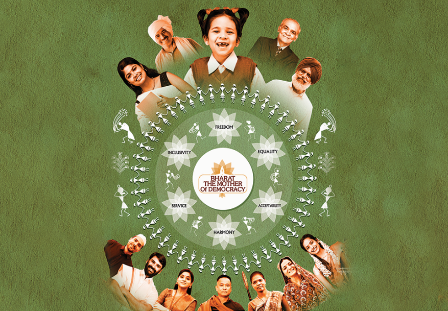
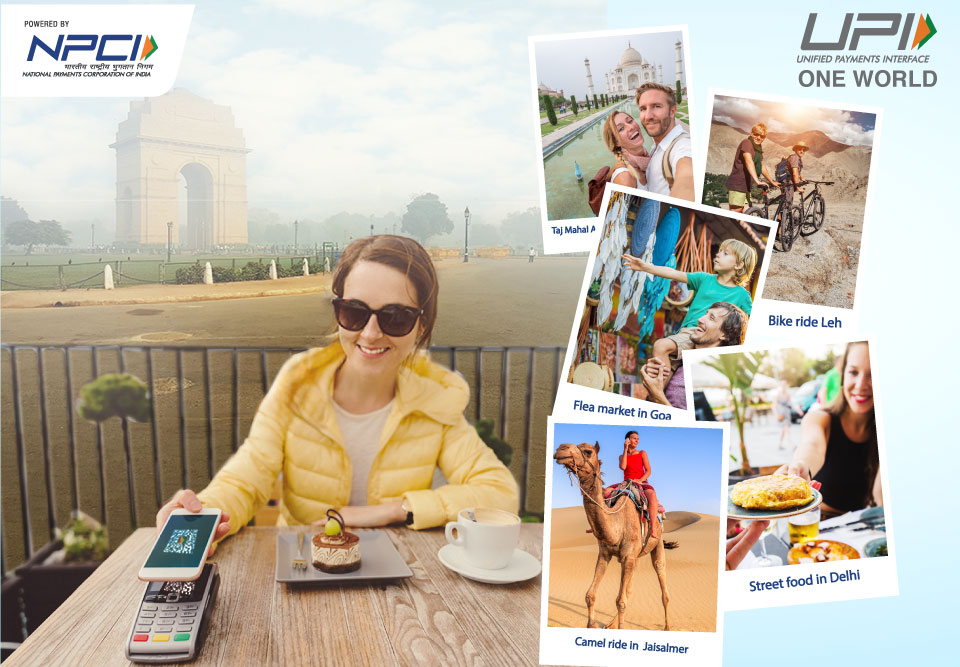
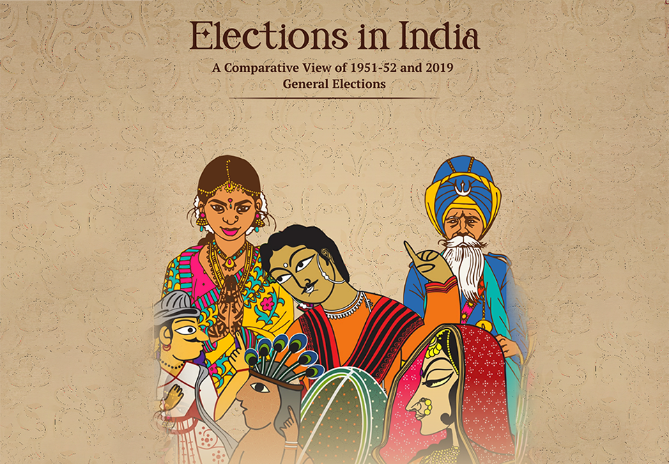

EXPLORE INDIA
Home > About Explore India

Travel and experience the beauty of
India is a mosaic of multicultural experiences. With a rich heritage and
myriad attractions, the country is among the finest destinations for a
holistic vacation. Extending from the snow-covered Himalayan heights to
the tropical rain forests of the south, India is home to spectacular
landscapes - long stretches of coastline; expansive hot, cold and white
salt deserts; dense forests; alpine meadows and lakes, serene ghats and
largest tiger reserve. India is known for its monuments and edifices
that display the fine architecture and grandiose of different eras in
the country.

Culture & Heritage of India
The rich cultural heritage of India, one of the world’s oldest
civilizations, is an all-embracing confluence of religions, traditions
and customs. Over the years, numerous styles of art, architecture,
painting, music, dance, festivals and customs have developed in India.
The finesse of Indian handiwork, the richness of silk and cotton
textiles, the ethnicity of jewellery, everything has come down as a
heritage from ancient times and is being kept alive generation after
generation. Festivals reflect the soul of India’s diversity and its rich
cultural heritage. Various festivals of differing character - national,
social, cultural and religious, are celebrated across the country
throughout the year. To know more about Festivals of India

Bharat- The Mother of Democracy
"In Bharat that is India, having the consent of the people in government
has been a part of life since the beginning of recorded history.
According to the Indian ethos, democracy comprises the values of
harmony, freedom of choice, freedom to have multiple ideas ,
acceptability, equality, governance for the well-being of the people and
inclusion in a society, all of which enable its ordinary citizens to
lead dignified lives".

Azadi Ka Amrit Mahotsav
Azadi Ka Amrit Mahotsav is an initiative of the Government of India to
celebrate and commemorate 75 years of independence and the glorious
history of its people, culture and achievements. This Mahotsav is
dedicated to the people of India who have not only been instrumental in
bringing India thus far in its evolutionary journey but also hold within
them the power and potential to enable Prime Minister Narendra Modi's
vision of activating India 2.0, fuelled by the spirit of Aatmanirbhar
Bharat. The official journey of Azadi ka Amrit Mahotsav commenced on
12th March 2021 which started a 75-week countdown to our 75th
anniversary of independence and will end post a year on 15th August
2023.

India’s Achievements
The journey of India since August 15, 1947 has been one of development.
India is the world’s largest democracy, it’s fifth largest economy, a
lucrative destination for foreign direct investment, and a global
information technology (IT) powerhouse. On India’s proposal, the United
Nation’s General Assembly had adopted the International Day of Yoga
(celebrated since 2014) and the International Year of Millets
(coinciding with India’s G20 Presidency). Some of India’s latest
development initiatives across sectors include Startup India Initiative;
Digital India; Make in India campaign; Pradhan Mantri Jan Dhan Yojana
(PMJDY) - one of the biggest financial inclusion initiatives in the
world; AYUSHMAN Bharat- the biggest government-sponsored healthcare
scheme in the world; and PM Ujjwala Yojana – providing universal access
to clean energy, International Solar Alliance, among others.

UPI One World
UPI One World is the ultimate solution for hassle - free and secure
digital payments. You can transact seamlessly with ~50 million merchant
outlets across India that accept UPI payments along with various added
benefits that include going cashless and ease of expense tracking in UPI
One World Mobile Application. It is the Prepaid payment instrument
linked to UPI provided to foreign nationals/ NRIs coming from G20
countries. UPI One World is a slice of the UPI experience crafted for
inbound travellers. It is the Prepaid payment instrument linked to UPI
provided to foreign nationals/ NRIs coming from G20 countries.

Bharat - Mother of Democracy - Elections in India
Elections in India, A comparative view of 1951-52 and 2019, is a visual
journey of the most vibrant democracy in the world. It showcases the
evolution of the Indian electoral machinery by comparing the first
General election to the Lok Sabha to the last, the 17th General Election
held in 2019.